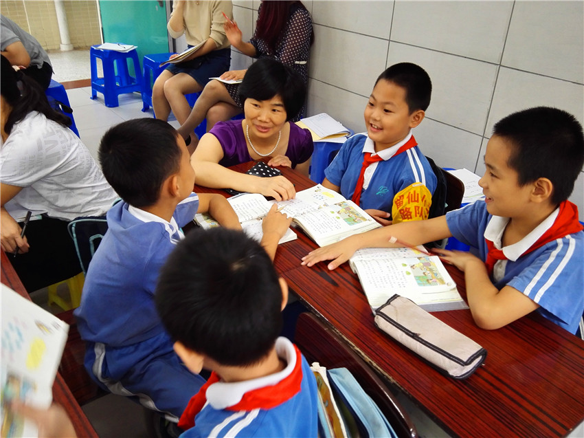
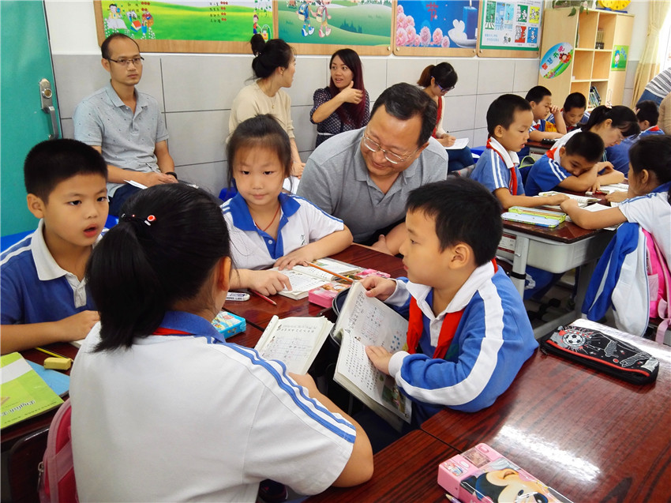
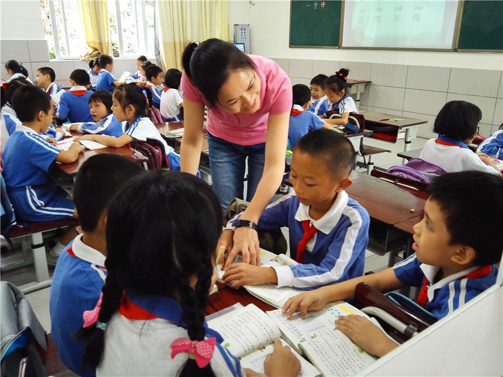
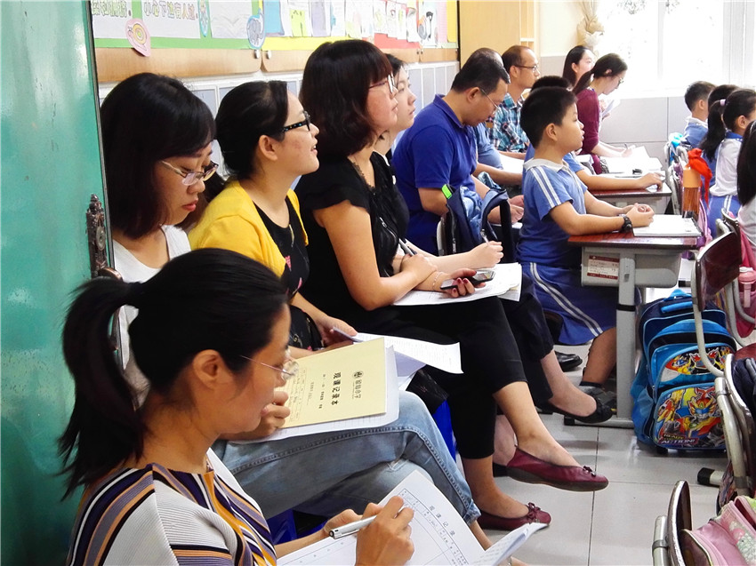
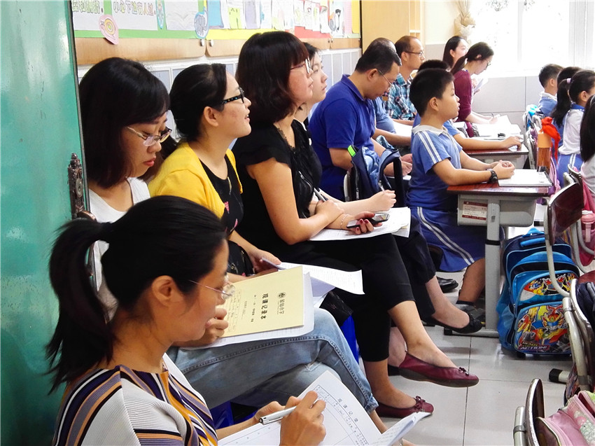

通讯员：张利云 摄影：留仙影像工作室 编辑：巫棋翔
留仙小学开展了为期一周的新入职教师汇报课活动。
四位教师各展其能，给听课教师很多启迪和收获。杨老师的《慈母情深》引导学生抓住动作、神态的语句，多角度品读文中母亲的艰辛和极力支持孩子读书的感人形象，读中悟言语形式之妙，比较中明言语形式之神，浓浓的语文味在课里课外萦绕。邱老师的《欢庆》用清新别样的灯笼生字卡板书营造浓浓的欢庆场面，然后引导进行形式多样的认读识字和读书悟情活动。首老师的《一分钟》重在启迪学生学会用自己的识字方法自学识字，教师点拨学一个生字方法悟出一大串生字的方法，重在授“渔”。江老师的美术课将科学实验课融进课堂，让学生动手将三原色水变魔术般变出不同的颜色，然后在教师示范和美术作品的启迪下开始创作同心圆画作，学生兴趣盎然，创作出多彩多姿的作品。
全体行政、科组长全程参与了学习和观摩，并对新入职教师做公平公正的考核评价，很多教师也参与了观摩。留仙一直都有这样的优秀传统，严格把好入职关，同时不忘初心，珍惜每一个学习借鉴的机会，不断提升自己的能力。
 



Copyright©2015深圳市南山区留仙小学版权所有 备案号：粤ICP备 10073249号-1 | 技术支持：静态模板